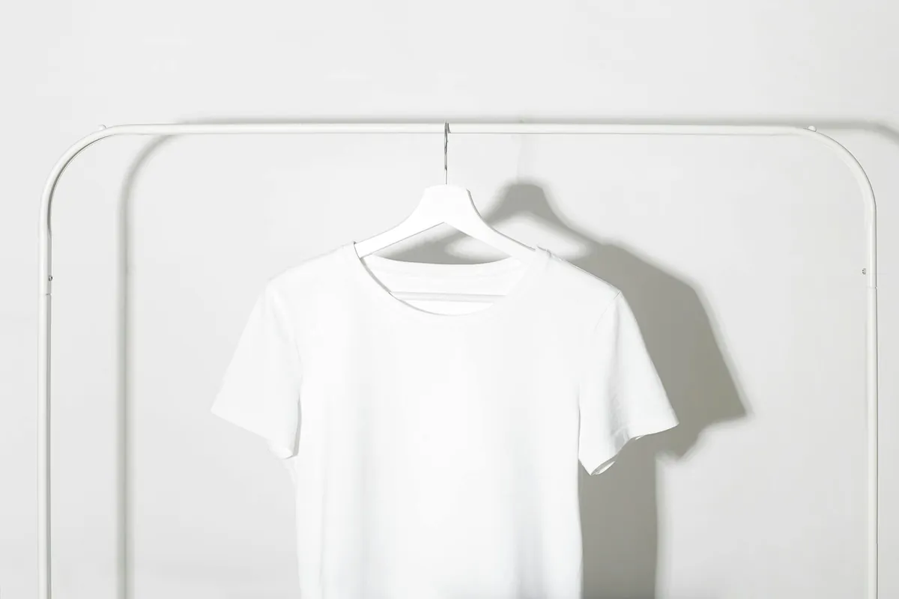
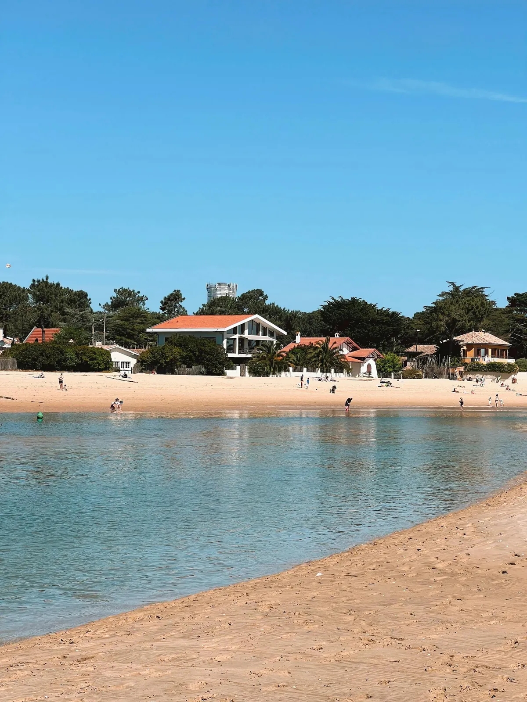

Blanchisserie artisanale, pressing confié à nos partenaires spécialisés et location de linge de maison — tout le soin du linge, réuni sous un même toit.
Linge de lit, linge de bain, linge de table, vêtements du quotidien : chaque pièce est lavée, séchée, repassée et pliée avec une attention nominative. Pas de mélange, pas d'industriel — juste du travail soigné, article par article.
Au poids ou à la pièce, pour un dépôt unique ou un enlèvement régulier, nous nous adaptons à votre rythme.
Voir les tarifs blanchisserie →Amenez votre linge à la maison ou planifiez un enlèvement.
Chaque article est enregistré et rattaché à votre commande.
Lavage, séchage, repassage selon les spécificités du textile.
Pliage soigné, mise sous housse, retrait ou livraison.
Costumes, robes de soirée, manteaux, vestes en laine ou en soie : les pièces délicates méritent un traitement spécifique. Nous les confions à nos partenaires pressing spécialisés, sélectionnés pour leur sérieux et leur savoir-faire.
Vous déposez chez nous, nous gérons le transport, le suivi et la restitution — vous n'avez qu'un interlocuteur.
Voir les tarifs pressing →
Vous apportez votre pièce, nous notons les consignes particulières.
Acheminement au pressing spécialisé avec vos instructions.
Vérification qualité à réception — aucune pièce ne ressort sans contrôle.
Notification dès disponibilité, mise sous housse protectrice.
Draps, serviettes, housses de couette, nappes : évitez de voyager avec votre linge ou d'en racheter à chaque saison. Nous proposons des kits complets, livrés impeccables, repris, lavés et remis à votre disposition.
À la semaine, à la quinzaine ou à l'année pour les résidents secondaires, les locations saisonnières et les conciergeries.
Voir les kits et tarifs →
Hôtels, restaurants, résidences, conciergeries : accédez à votre espace pro pour suivre vos commandes, vos locations et vos factures en temps réel.
Pour la blanchisserie : 48 h ouvrées en standard, 24 h en service express selon disponibilité. Pour le pressing : 3 à 5 jours ouvrés selon la pièce et le partenaire. Les délais peuvent varier en haute saison — nous vous informons à la prise de commande.
Oui, sur le Cap Ferret et ses alentours, pour les volumes réguliers et les professionnels. Pour un dépôt ponctuel, le passage à la maison est idéal et vous permet de discuter directement de vos souhaits.
Vous choisissez un kit (lit 1 place, lit 2 places, kit week-end, kit villa…) et une durée. Le linge vous est livré propre et repassé, et nous venons le reprendre à la fin de la période. Les conditions d'usage et la responsabilité en cas de dommage sont précisées dans nos CGV.
Non, le pressing (nettoyage à sec) est confié à nos partenaires spécialisés, sélectionnés pour leur exigence. Nous assurons le dépôt, le suivi, le contrôle qualité au retour et la restitution — vous n'avez qu'un interlocuteur.
Oui, c'est une part importante de notre activité. Hôtels, restaurants, conciergeries, résidences de vacances : nous proposons des comptes dédiés avec suivi nominatif, facturation mensuelle et montée en charge saisonnière. Découvrir l'espace Pro →
Réponse sous 24 h ouvrées · Aucun engagement